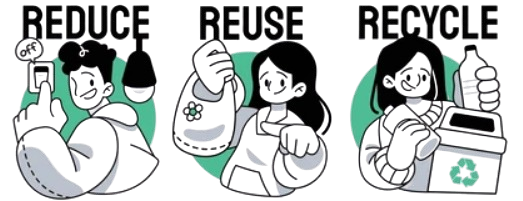
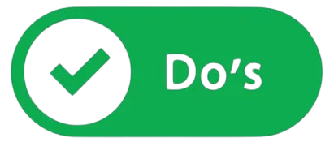

Recycle
Let's make our planet green!

The Earth Nowadays

3R
- Reducing means using less and making smart choices to cut waste.
- This means buying minimally packaged items, avoiding single-use products, and only getting what you need.
- This helps save resources, lower energy use, and reduce landfill waste.
- Reusing means giving items a second life.
- Use old jars for storage, donate clothes and furniture, and replace disposables with reusables.
- This saves resources and supports sustainability.
- Recycling turns waste into new products, saving resources and reducing landfill waste.
- Paper, plastic, metal, and glass are reused, cutting energy use and emissions.
- This helps the environment and supports a sustainable economy.
Local Recycling Program
Types of Recycle Bin
Do and Don'ts


- Do Sort Properly
- Ensure items are placed in the correct bin (e.g., paper in the blue bin, glass in the brown bin, and plastics/metals in the orange bin).
- Do Rinse Containers
- Clean food residue from containers like jars, cans, and bottles before recycling.
- Do Flatten Boxes
- Break down cardboard boxes to save space in the bin.
- Do Use Designated Bags
- If required, use clear or specific recycling bags to store materials.
- Do Check Labels
- Follow local recycling guidelines and bin labels to avoid contamination.
- Do Include Dry Items
- Make sure recyclables are dry to prevent mold or damage.
- Do Recycle Electronics Responsibly
- Take e-waste to designated drop-off points instead of putting them in standard recycling bins.
- Don’t Contaminate
- Avoid placing non-recyclable items like food waste, greasy pizza boxes, or disposable diapers in recycling bins.
- Don’t Bag Recyclables (Unless Required)
- Loose items are better for sorting, so avoid bagging unless specified by your local program.
- Don’t Include Hazardous Waste
- Batteries, chemicals, and medical waste should never go in standard recycling bins.
- Don’t Recycle Plastic Bags
- These should be taken to special collection points, not placed in curbside bins.
- Don’t Overfill the Bin
- Ensure the lid can close properly to prevent windblown litter.
- Don’t Include Sharp Objects
- Items like broken glass or needles should be disposed of through proper waste channels, not recycling bins.
- Don’t Assume Everything is Recyclable
- Always double-check local guidelines before recycling unfamiliar items.
Malaysia Recycle Program
| Company Name | Description | Activity | Locations |
|---|---|---|---|
| SWCorp Malaysia (Solid Waste and Public Cleansing Management Corporation) | SWCorp oversees solid waste management and public cleansing efforts in Malaysia. | - Promotes waste separation at source. - Runs public awareness campaigns on recycling and waste reduction. |
Includes areas like Kuala Lumpur, Putrajaya, and parts of Selangor, Johor, Melaka, Pahang, Kedah, Perlis, and Negeri Sembilan. |
| KitaRecycle (Alam Flora) | Managed by Alam Flora, KitaRecycle encourages recycling through a reward-based system. | - Users can register via the KitaRecycle mobile app. - Recyclable items like plastics, paper, and metals can be deposited at designated drop-off points. - Earn points redeemable for rewards. |
Operates in areas under Alam Flora's jurisdiction, such as Kuala Lumpur, Putrajaya, and Pahang. |
| E-Waste Recycling Program (DOE Malaysia) | A program by the Department of Environment (DOE) focusing on the proper disposal of electronic waste (e-waste). | - Collects items like old phones, laptops, and batteries. - Drop-off points at licensed facilities or during e-waste collection campaigns. |
Includes areas like Kuala Lumpur, Putrajaya, and parts of Selangor |
| Tetra Pak Malaysia Recycling Program | Focuses on recycling beverage cartons such as milk and juice boxes. | - Partnerships with schools and recycling centers to collect used Tetra Pak cartons. - Encourages proper rinsing and flattening of cartons before recycling. |
Available at selected recycling centers and supermarkets. |
| MYSaveFood (Food Waste Management Program) | A collaboration between the Malaysian government and SWCorp to address food waste. | - Promotes composting organic waste at home. - Public campaigns to reduce food wastage and recycle organic materials. |
- |